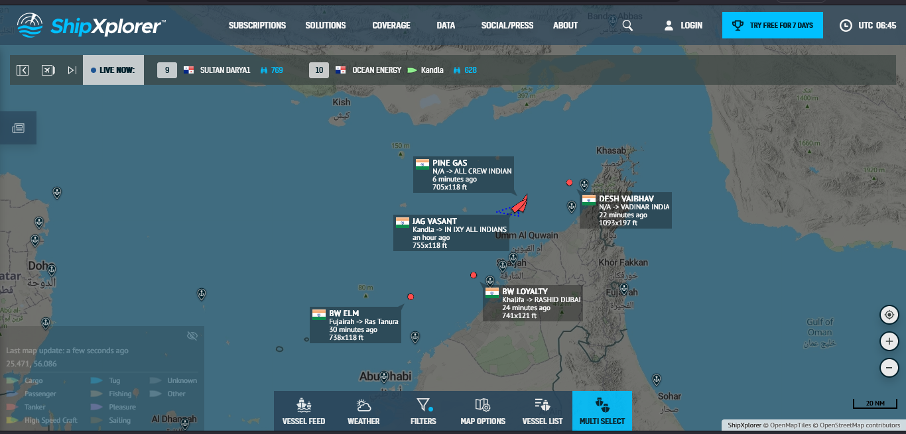

Energy Security · India
On March 12, 2026, two days after the U.S.-Israeli conflict with Iran closed the Strait of Hormuz, India's Oil Minister Hardeep Singh Puri confirmed to parliament what the supply chain data had been quietly signalling for years: India had no buffer. With roughly 60% of its LPG arriving from Gulf countries now cut off, the government invoked emergency powers, ordered refiners to maximise production, and scrambled to secure replacement cargoes from the United States, Norway, Canada, and Russia. The problem was not finding new suppliers. The problem was time.
A Gulf cargo reaches India's western terminals in 8 to 12 days. A replacement from the US takes 30 to 40 days. Norway is 35 to 42. Canada is 38 to 45. Even Russia, the fastest emergency alternative via Arctic or Pacific routes, takes 20 to 28 days. India's domestic production, on its own, can sustain the country for approximately 27 days before rationing begins. The gap between when supply runs out and when replacement cargo arrives is not a planning scenario. Right now, it is the situation.
This report traces how India arrived here. According to the Petroleum Planning and Analysis Cell (PPAC), India consumed 30.855 MMT of LPG in the most recent full year, or 84,500 tonnes every single day. Domestic production covers only 39% of that. The remaining 18.796 MMT, 61% of total consumption, arrives by ship through just six coastal terminals, with no storage buffer and no strategic reserve. The ₹10 surcharge on a bowl of noodles, the PG mess with a shrinking menu, the restaurant that quietly closed: these are not isolated events. They are the visible edge of a vulnerability that runs very deep.
From April through January, imports must cover a gap of 1,500 to 1,700 thousand MT per month that domestic production simply cannot fill. This is not a seasonal shortfall. It is structural, baked into the supply chain every month of every year.
Monthly volumes in '000 MT · April – January 2024–25
| Month | Production | MoM | Imports | MoM | Consumption | MoM | Net | Prod % | Import % |
|---|
Net = prod + imp − cons · MoM = month-on-month
All 18.8 MMT of annual LPG imports flow through just six coastal terminals. Dahej alone accounts for 41% of total capacity, and as of FY2024-25 it is running at 96.6% utilisation, hitting 110% during Q1 2024's summer peak. There is almost no slack at the top of the system.
Any disruption at Dahej alone would remove 41% of India's entire LPG import capacity overnight. The 2022-23 utilisation trough of 78% was temporary, driven by high spot prices rather than structural change. By FY2024-25, Dahej was back near full capacity.
Nameplate capacity (MMTPA) · historical utilisation rates · six operating terminals
Each month, total supply runs just barely ahead of consumption. The cumulative ten-month surplus is only 1.4 MMT, which works out to roughly 16 days of full consumption. And it is not sitting in tanks anywhere. It is a flow residual, dissipated across the supply chain the moment it is created.
Stacked production + imports vs. consumption · flow residual analysis
1.4 MMT surplus is a flow residual — not stored. Cannot be drawn on in an emergency.
Using PPAC annual figures of 30.855 MMT consumed and 18.796 MMT imported, with zero storage, the 1.4 MMT flow surplus is the only buffer. Domestic production alone covers just 11 to 12 days of consumption per month.
Using the buffer to bridge the shortfall, India could sustain full consumption for approximately 27 days. After that, hard rationing at just 39% of current demand, indefinitely, until imports resume. The IEA recommends a 90-day strategic reserve. India holds effectively zero.
A 30-day reserve requires 2.54 MMT of dedicated storage. A 90-day IEA reserve requires 7.61 MMT. Neither exists anywhere in India's LPG supply chain today.
Three scenarios: full imports / 50% cut / zero imports · flow-through model, no storage assumed
Runway vs IEA 90-day benchmark
Flow-through only · no storage assumed · buffer exhausted day 27
Commercial cylinder prices in Bangalore have risen by ₹144 in the current cycle — the direct pass-through of tighter supply hitting an unsubsidised, fully market-linked price.
Government-regulated domestic vs. unsubsidised commercial · goodreturns.in
Source: goodreturns.in · Domestic cylinder is government-subsidised; commercial is fully market-linked.
The report so far has focused on terminal concentration as a chokepoint, but the upstream geography is the deeper vulnerability. Until March 2026, roughly 60% of India's LPG arrived from Gulf countries: Saudi Arabia, Kuwait, and the UAE. The remaining share came primarily from the United States, with smaller volumes from Qatar, Nigeria, and spot markets.
Following the U.S.-Israeli conflict with Iran, the Strait of Hormuz closed, cutting India's primary supply corridor overnight. Oil Minister Hardeep Singh Puri confirmed to parliament on March 12, 2026 that India was urgently diversifying, securing new cargoes from the United States, Norway, Canada, and Russia, in addition to whatever Gulf supply remained accessible. The government invoked emergency powers ordering refiners to maximise LPG production and restrict industrial sales, while the environment ministry permitted biomass, kerosene, and coal as temporary alternate fuels for the hospitality sector.
The transit time problem makes this crisis particularly acute. A Gulf cargo reaches India's western terminals in 8 to 12 days. A replacement cargo from the US takes 30 to 40 days. Norway is 35 to 42 days. Canada is 38 to 45 days. Russia via the Arctic or Pacific route takes 20 to 28 days. In other words, even if every alternative cargo was contracted on day one of the disruption, the earliest substantial relief could arrive is three to six weeks later, well past the 27-day domestic production runway.
When Hormuz closed, India's 27-day runway and a 30 to 40 day US transit time collided. The gap between when domestic supply runs out and when replacement cargo arrives is the precise definition of a humanitarian energy crisis. The minister called it "consumer anxiety." The mathematics call it a structural failure.
Pre-crisis sourcing share vs. emergency diversification · estimated voyage days to west-coast terminals
Bars show minimum–maximum voyage days (range). Dashed red line = 27-day domestic supply runway. Cargo must arrive before this line to avoid rationing. Source: Reuters Mar 12, 2026 · industry voyage estimates.
A ShipXplorer vessel tracker screenshot taken at 06:45 UTC on March 14, 2026, two days after the Hormuz closure, shows five Indian-flagged LPG and tanker vessels clustered in the UAE / Gulf of Oman zone. Their movements tell the story more clearly than any press release.
The most telling vessel is BW ELM, routing Fujairah to Ras Tanura. Fujairah sits on the Gulf of Oman side of the Strait, and it is the primary non-Hormuz transshipment hub that vessels use precisely when the strait is impassable. A vessel calling at Fujairah and then heading to Ras Tanura, Saudi Arabia's main LPG export terminal, is executing the Cape bypass manoeuvre in real time. This is what emergency re-routing looks like on a map.
DESH VAIBHAV, at 333m × 60m, is not an LPG carrier at all. Those dimensions identify it as a Q-Flex class LNG carrier, likely carrying around 72,000 MT of liquefied natural gas to Vadinar's LNG terminal. Its presence here is still significant, signalling that India's LNG supply chain is simultaneously disrupted, but it should not be counted in the LPG tally.
The four genuine LPG vessels — BW ELM, JAG VASANT, PINE GAS, and BW LOYALTY — are all Very Large Gas Carriers (VLGCs) with capacities of 82,000 to 84,000 CBM each. At an LPG density of around 0.485 MT/CBM, each vessel carries roughly 40,000 to 41,000 MT of LPG. Combined, the four vessels represent approximately 162,000 MT, equivalent to 1.78 days of India's total national LPG consumption, or about 11.4 million domestic cylinders. That is the physical cargo sitting in this one patch of sea, stalled or rerouted.
BW ELM at Fujairah is not an anomaly. It is the entire report in a single data point: India's LPG supply chain, forced off its normal routing, burning extra days and dollars to get around a closed strait, with no buffer to absorb the delay on the receiving end.

ShipXplorer AIS screenshot · 06:45 UTC · 14 Mar 2026 · Gulf of Oman / Hormuz zone
AIS positions as of screenshot · five vessels tracked · cargo capacity estimated from LOA × beam dimensions
| Vessel | Last Route | Dimensions | Type | Capacity | Est. Cargo | = India days | Signal |
|---|---|---|---|---|---|---|---|
| BW ELM | Fujairah → Ras Tanura | 225m × 36m | VLGC | 84,000 CBM | ~40,740 MT | 0.45d | CAPE BYPASS |
| DESH VAIBHAV | N/A → Vadinar India | 333m × 60m | LNG Carrier | ~160,000 CBM | ~72,000 MT LNG | LNG ≠ LPG | INBOUND · HOLDING? |
| JAG VASANT | Kandla → IN IXY | 230m × 36m | VLGC | 84,000 CBM | ~40,740 MT | 0.45d | POSITION STALE |
| PINE GAS | N/A → All Crew Indian | 215m × 36m | VLGC | 82,000 CBM | ~39,770 MT | 0.44d | NO DEST. FILED |
| BW LOYALTY | Khalifa → Rashid Dubai | 226m × 37m | VLGC | 84,000 CBM | ~40,740 MT | 0.45d | LOCAL UAE MOVE |
Cargo estimates: VLGC capacity 82,000–84,000 CBM × LPG density ~0.485 MT/CBM. DESH VAIBHAV (333m × 60m) excluded from LPG total — dimensions confirm LNG carrier (Q-Flex class), not LPG; Vadinar has both LNG and LPG terminals. Not all vessels may be fully laden. Source: ShipXplorer 06:45 UTC 14 Mar 2026 · industry CBM references.
The IEA's 90-day strategic reserve standard is often cited, but it was designed for oil-importing economies with functioning reserve infrastructure. For LPG specifically, the more instructive comparisons are India's Asian peers: Japan, South Korea, and China, all of which are similarly import-dependent but have built very different buffer architectures.
Japan maintains roughly 50 days of LPG reserves through a combination of government-mandated industry storage and underground cavern facilities. South Korea operates a national LPG reserve of around 40 days through KNOC (Korea National Oil Corporation). China, despite being the world's largest LPG importer, holds strategic and commercial inventories equivalent to 30 to 45 days of consumption. India holds effectively zero, relying entirely on pipeline flow and tanker schedules to meet daily demand. This is not a developing-economy baseline. It is an outlier even among emerging markets.
India's reserve position is not just below the IEA standard. It is an outlier among all major LPG-importing economies in Asia. Japan, South Korea, and China all hold meaningful strategic buffers. India holds none.
Days of consumption held in national / government-mandated reserve · approximate figures
Figures are approximate from public industry sources and government reports. Japan and South Korea figures include government-mandated industry obligations.
Dashboard 2 noted five terminals under construction, adding 22 MMTPA of nameplate capacity. These include the Chhara LNG terminal in Gujarat (5 MMTPA, Tortoise Energy), the Jaigarh terminal in Maharashtra (4 MMTPA), the Kamarajar Port terminal in Tamil Nadu (5 MMTPA), and the Ennore expansion. Most are expected to come online in phases between 2025 and 2027.
More capacity is genuinely helpful. It reduces the single-terminal concentration risk at Dahej and spreads import throughput across more points of entry. But capacity expansion solves only the throughput problem, not the storage problem. A new terminal that runs at full flow-through still provides zero buffer in a supply disruption. Without dedicated strategic storage, whether pressurised bullets, underground caverns, or floating storage units, the 27-day cliff does not move.
The government's Strategic Petroleum Reserve (SPR) programme, managed by Indian Strategic Petroleum Reserves Limited (ISPRL), currently stores only crude oil, at Vishakhapatnam, Mangaluru, and Padur. LPG is explicitly excluded. There is no announced programme to extend strategic storage to LPG. The gap between the problem's scale (2.54 MMT for 30 days, 7.61 MMT for 90 days) and any current policy response remains complete.
Five new terminals will help India receive more LPG, faster. They will not help India survive a month without it. Throughput capacity and strategic storage are different problems, and only one of them is being addressed.
Planned capacity additions · nameplate MMTPA · strategic storage status
| Terminal | State | Capacity (MMTPA) | Developer | Expected Online | Solves Storage? |
|---|
Timelines are projected and subject to regulatory / construction delays.
The Hormuz closure did not create India's gas supply problem. It revealed it. The structural vulnerability, 61% import dependency flowing through six terminals with no strategic reserve, was always there. The war simply removed the assumption that supply chains would keep running smoothly.
India's entire gas-dependent economy — 300 million households, street food vendors, restaurant kitchens, PG caterers — sits on a supply chain with no shock absorber whatsoever. A geopolitical disruption, a major terminal outage, or a severe weather event affecting shipping routes could translate into a nationwide supply crisis within two weeks. The current crisis is not a hypothetical. It is already unfolding.
The noodle shop owner raising prices is not being opportunistic. He is the first person in a very long chain to feel what happens when a 61%-import-dependent system has no buffer and something, somewhere, goes wrong. The PG mess reducing items, the restaurants shutting down, the price boards changing: these are not isolated local events. They are the visible edge of a structural national vulnerability that runs very deep, and that a closed strait has finally made impossible to ignore.